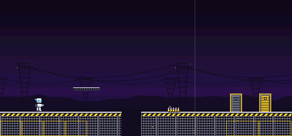
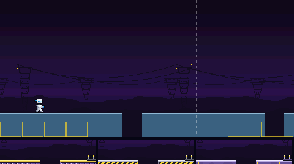
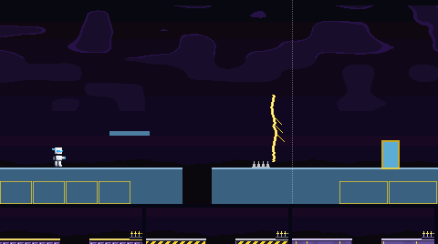
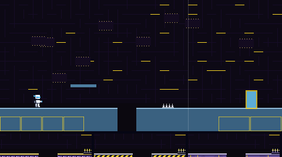
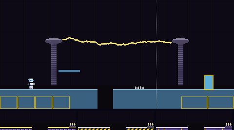
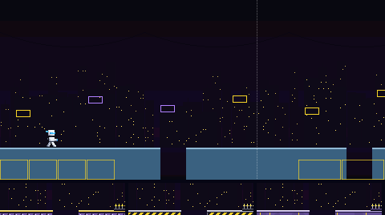
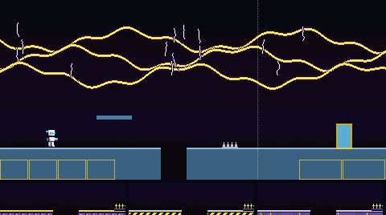
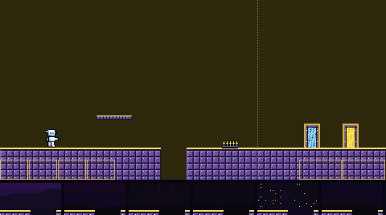
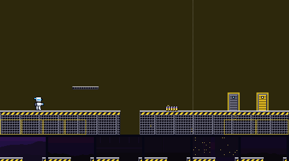
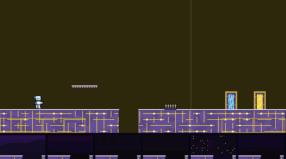

The way to Volt Man's door. Six backdrops, and three materials (each a floor, platform, spikes, boss door and exit door), built from his yellow and violet. Batch 1 of 3.
Picked by the owner on 5 Nov 2026, in their words: "1b but make the spikes a series of AA style batteries with terminal nubs instead of the usual spikes"
Done: material B's spikes are now a row of AA batteries standing up, each with a silver cap and its terminal nub on top, a violet band and a yellow cell, in Volt Man's colours. Every so often a spark crackles between two nubs, as you answered, so they read as something that hurts. Backdrop 1 is as offered. The other variants are kept as they were offered. Batch 1 is in the game.
Backdrop 1 behind material B, with the player standing still. The batteries are the spike bed in the middle; the boss door is on the left, the exit door on the right. This picture moves: watch for the sparks.

Each is shown behind today's plain pieces, so only the backdrop changes. The strip under it is its pit edge with floors A, B and C in front. The two marked MOVING scroll in layers, the far ones slower; their pictures move.






Each shows the floor with a pit, a platform, spikes, the boss door (left) and the exit door (right), in front of today's flat colour. The strip under it is its pit edge against backdrops 1 to 6. The contrast numbers are the worst against any of the six; the game asks at least 2 for the ground, 4.5 for its lit edge and 4.5 for the white player on it.


